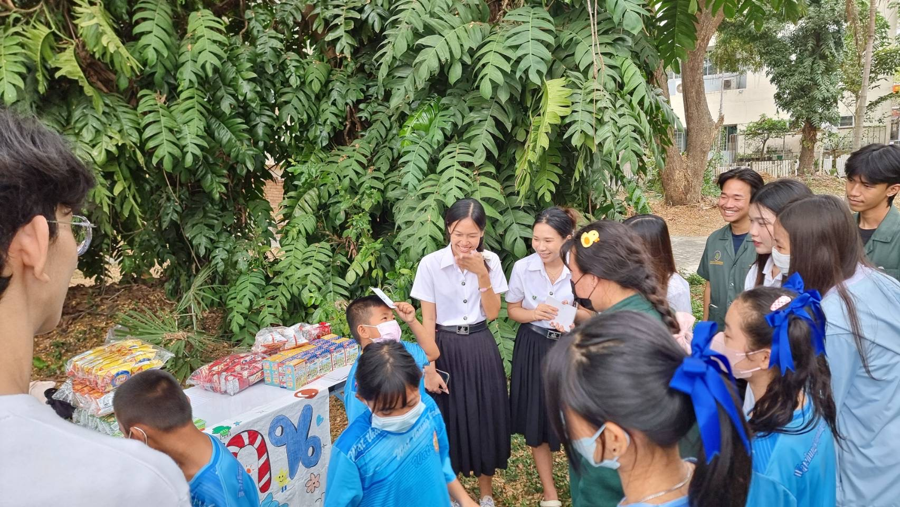

From the university activities I joined,
I have learned that when facing new situations, I can adapt,
change my way of thinking and actions, stay flexible,
and always be ready to learn new things. ♡
✦ Happiness in the 21st Century

A class project where we created activities for primary students to practice language, communication, and math.
I worked on planning, preparing, and presenting.
This improved my teamwork, management, and communication skills, and our group won the award for highest satisfaction.
✧ Badminton Competition ✦
Joined the faculty sports event in women's doubles badminton. It was my first competition, where I learned to manage pressure and nerves. In 2025, I joined the tryouts again, gaining more experience.
✦ Music Club ✧
A university music club where I tried singing, drums, guitar, and keyboard. It gave me the chance to learn new things and discover more about myself.
✧ Freshy KU 83 ✦
A welcoming activity for new students to explore the university and make friends. I joined as staff, taking care of freshmen and coordinating with senior organizers.